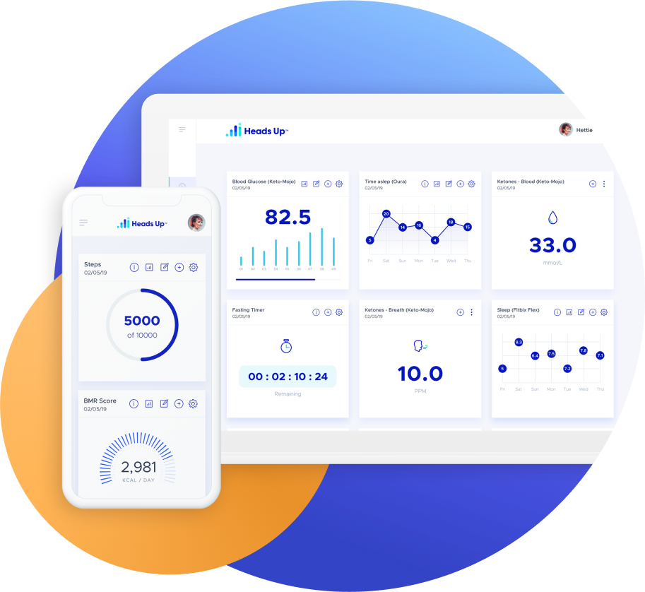
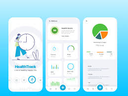

This tool helps differentiate between common causes of symptoms such as tiredness, brain fog, occasional sleepiness, and lightheadedness. We consider: Hashimoto’s, Vitamin B12 Deficiency, Iron Deficiency, Low Blood Pressure (Hypotension), and Hypoglycemia.